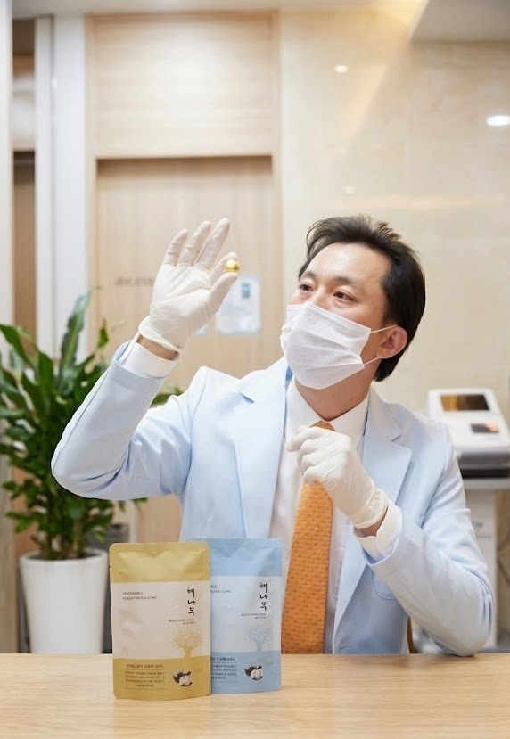

증상과 동반 변화
어디가 어떻게 불편한지뿐 아니라 피로·소화·수면 등 함께 나타나는 변화도 살핍니다.
HAENAMU · 진료 안내
증상과 건강 상태를 종합해 맞춤 한약부터 녹용 보약, 공진단까지 적합한 처방을 상담합니다.

일상에서 느끼는 변화를 편하게 말씀해 주세요. 증상의 원인과 필요한 진료는 진찰을 통해 살펴봅니다.
쉽게 지치고 기운이 없을 때
스트레스·과로 등과 함께 나타나는 자율신경계 기능 이상(자율신경실조증) 관련 불편
식욕이 줄거나 소화가 편치 않을 때
회복기에 기력 저하가 계속된다고 느낄 때
증상과 체질, 생활습관, 복용 중인 약 등을 함께 살핍니다.
진찰 결과에 따라 처방을 결정하고 복용 방법과 기간을 안내합니다.
복용 후 나타나는 변화와 불편함을 확인하며 필요한 상담을 이어갑니다.
불편한 증상과 시작 시점, 현재 복용 중인 약·건강기능식품을 알려주시면 도움이 됩니다. 최근 검사 결과나 진료 기록이 있다면 가져오셔도 좋습니다.
복용 기간은 증상과 건강 상태, 처방 목적에 따라 달라집니다. 진찰 후 복용 방법과 예상 기간을 안내합니다.
약물 간 상호작용을 확인해야 할 수 있습니다. 처방약·일반약·건강기능식품을 모두 알려주시고, 기존에 복용하던 약은 임의로 중단하지 마세요.
녹용 보약은 처방 구성과 제형에 따라 복용 방법이 달라지고, 공진단은 일반적으로 환(丸) 형태로 복용합니다. 실제 복용 횟수와 시간은 처방 후 개별적으로 안내합니다.
약재 구성과 복용 기간 등에 따라 비용이 달라질 수 있습니다. 비급여 진료비 안내를 참고하시고, 구체적인 비용은 상담 시 확인해 주세요.
이 페이지는 일반적인 진료 정보이며 개인별 진단·치료를 대신하지 않습니다. 응급 증상이 의심되면 응급의료기관을 이용하세요.
월~금 09:30–20:00 · 토 09:30–16:00 · 일·공휴일 09:30–15:00
경기도 화성시 동탄솔빛로 47, 2층